Abstract
Recently, the multi-modal fusion of RGB, depth, and semantics has shown great potential in the domain of dense Simultaneous Localization and Mapping (SLAM), as known as dense semantic SLAM. Yet a prerequisite for generating consistent and continuous semantic maps is the availability of dense, efficient, and scalable scene representations. To date, existing semantic SLAM systems based on explicit scene representations (points/meshes/surfels) are limited by their resolutions and inabilities to predict unknown areas, thus failing to generate dense maps. Contrarily, a few implicit scene representations (Neural Radiance Fields) to deal with these problems rely on time-consuming ray tracing-based volume rendering technique, which cannot meet the real-time rendering requirements of SLAM. Fortunately, the Gaussian Splatting scene representation has recently emerged, which inherits the efficiency and scalability of point/surfel representations while smoothly represents geometric structures in a continuous manner, showing promise in addressing the aforementioned challenges. To this end, we propose GS3LAM, a Gaussian Semantic Splatting SLAM framework, which takes multimodal data as input and can render consistent, continuous dense semantic maps in real-time. To fuse multimodal data, GS3LAM models the scene as a Semantic Gaussian Field (SG-Field), and jointly optimizes camera poses and the field by establishing error constraints between observed and predicted data. Furthermore, a Depth-adaptive Scale Regularization (DSR) scheme is proposed to tackle the problem of misalignment between scale-invariant Gaussians and geometric surfaces within the SG-Field. To mitigate the forgetting phenomenon, we propose an effective Random Sampling-based Keyframe Mapping (RSKM) strategy, which exhibits notable superiority over local covisibility optimization strategies commonly utilized in 3DGS-based SLAM systems. Extensive experiments conducted on the benchmark datasets reveal that compared with state-of-the-art competitors, GS3LAM demonstrates increased tracking robustness, superior real-time rendering quality, and enhanced semantic reconstruction precision.
Overview
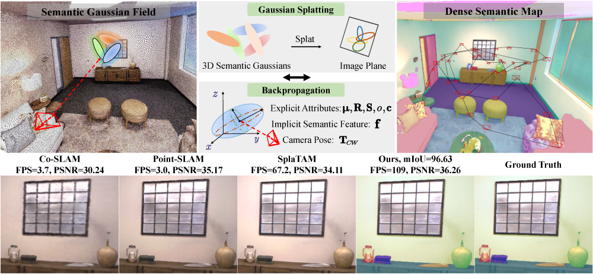
Our proposed GS3LAM utilizes the 3D semantic Gaussian representation and the differentiable splatting rasterization pipeline, and jointly optimizes camera poses and field for appearance, geometry and semantics, achieving robust tracking, real-time high-quality rendering, and precise 3D semantic reconstruction. Our contributions are summarized as follows:
- GS3LAM Framework: GS3LAM is a Gaussian Splatting Semantic SLAM framework, which models the scene as a Semantic Gaussian Field (SG-Field) to efficiently facilitate the conversion between 3D semantic features and 2D labels. By the joint optimization of camera poses and field for appearance, geometry, and semantics, it achieves robust tracking, real-time high-quality rendering, and precise semantic reconstruction.
- DSR Scheme: A Depth-adaptive Scale Regularization (DSR) scheme is proposed to reduce the blurring of geometric surfaces induced by irregular Gaussian scales within the SG-Field. By constraining Gaussian scales within a reasonable range determined by depth, it alleviates the ambiguity of geometric surfaces, thereby enhancing accuracy in semantic reconstruction.
- RSKM Strategy: To address the forgetting phenomenon in GS3LAM, we propose an efficacious Random Sampling-based Keyframe Mapping (RSKM) strategy, which exhibits notable superiority over prevalent local covisibility optimization strategies commonly employed in 3DGS-based SLAM systems. Our method significantly enhances both the reconstruction accuracy and rendering quality while maintaining the global consistency of the semantic map.
- Comprehensive Evaluation: Extensive experiments conducted on Replica and ScanNet datasets demonstrate that our GS3LAM outperforms its counterparts in terms of tracking accuracy, rendering quality and speed, and semantic reconstruction.
Framework of GS3LAM
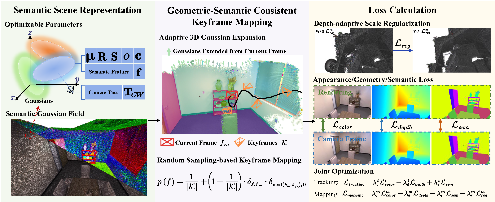
The framework overview of GS3LAM. GS3LAM models the scene as a Semantic Gaussian Field (SG-Field). For geometric-semantic consistent keyframe mapping, an adaptive 3D Gaussian expansion technique and a Random Sampling-based Keyframe Mapping (RSKM) strategy are employed. GS3LAM optimizes camera poses and SG-Field using appearance, geometry, and semantics, along with a Depth-adaptive Scale Regularization (DSR) scheme.
The Forgetting Problem in SG-Field.
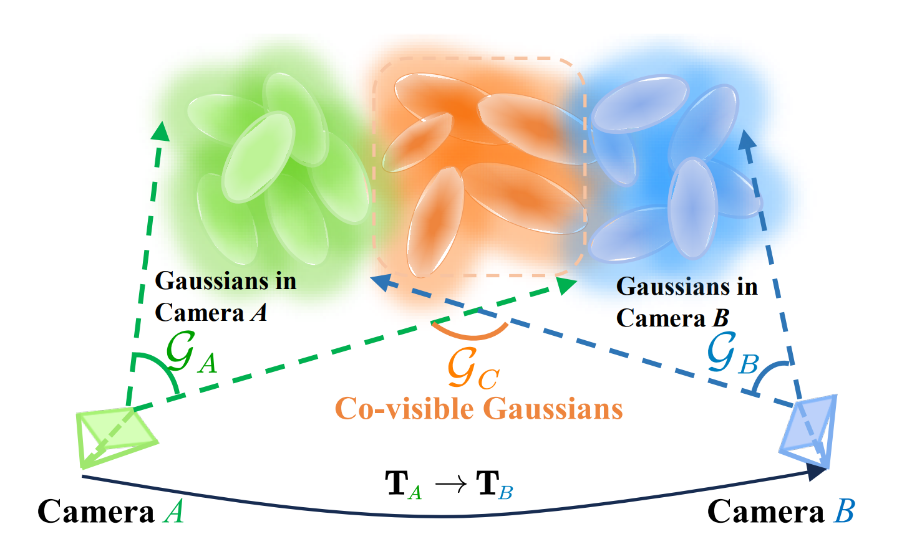
The forgetting problem in SG-Field. During the incremental optimization process, Gaussians $\mathcal{G}_A$ in camera $A$ are initially optimized. However, when optimizing the Gaussians $\mathcal{G}_B$ in camera $B$ , the co-visible Gaussians $\mathcal{G}_C = \mathcal{G}_A \cap \mathcal{G}_B$ tend to be excessively fitted to the latest frame of camera $B$, resulting in a decrease in the reconstruction quality of the previous frame captured by camera $A$.
Illustration of Optimization Bias
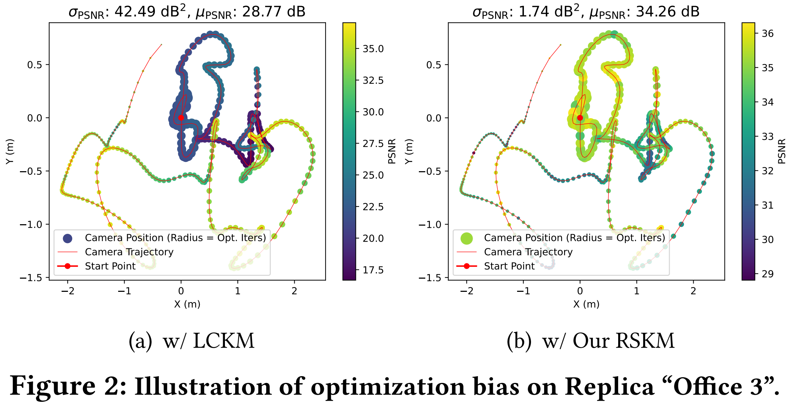
To address the forgetting phenomenon in GS3LAM, we propose a Random Sampling-based Keyframe Mapping (RSKM) strategy, which proves to be more effective than the Local Covisibility Keyframe Mapping (LCKM) strategy commonly adopted in 3DGS-based SLAM systems. Our observation suggests that the latter method introduces a considerable bias during the optimization of the Gaussian field, thereby leading to poor global map consistency. In particular, as depicted in the above figure, frames with dense co-observations (dense camera trajectories) and increased optimization iterations (large point radii) exhibit lower PSNR values (darker color), suggesting challenges in achieving convergence of the Gaussian field under the LCKM strategy. Conversely, our proposed RSKM strategy not only enhances the rendering quality of the global map (higher mean PSNR) but also ensures high consistency among all perspectives (smaller PSNR variance), effectively reducing the optimization bias.
Comprehensive Evaluation
Rendering Evaluation
Rendering performance on ScanNet Dataset
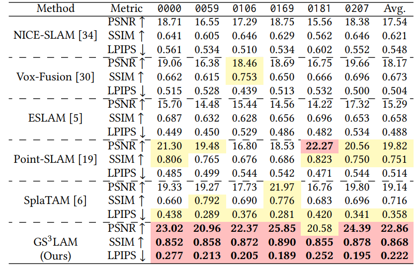
Rendering performance on Replica Dataset
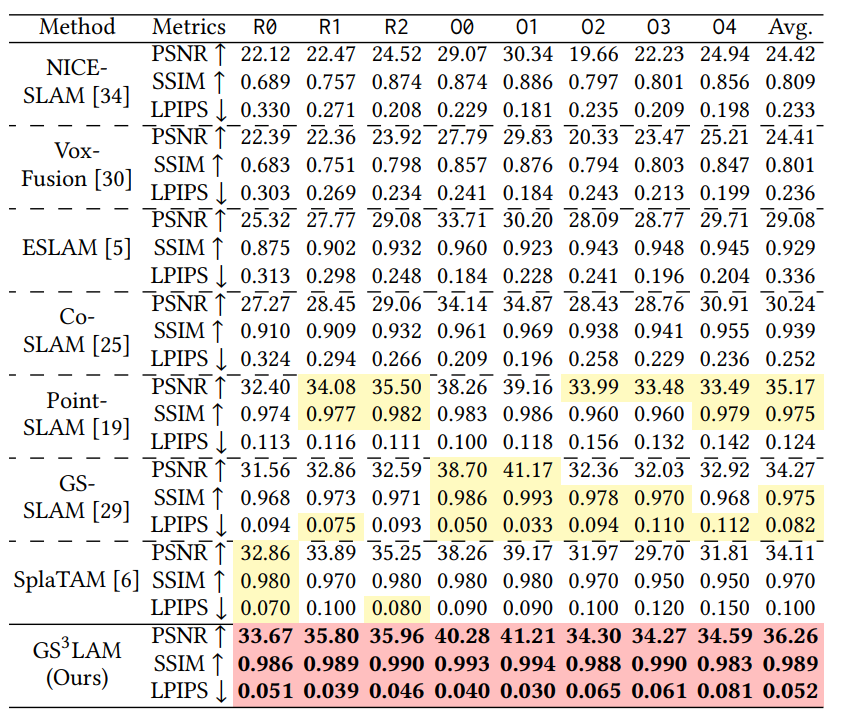
Qualitative comparison

Tracking performance on Replica (ATE RMSE)
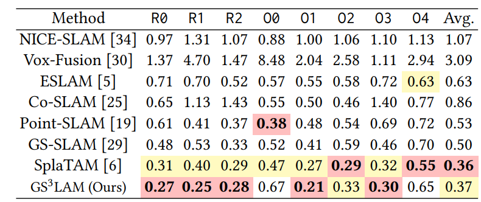
Semantic Reconstruction Evaluation
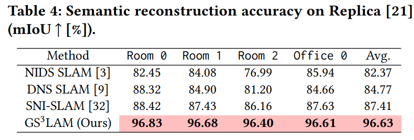
Ablation Study
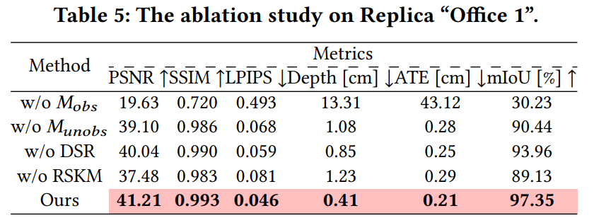
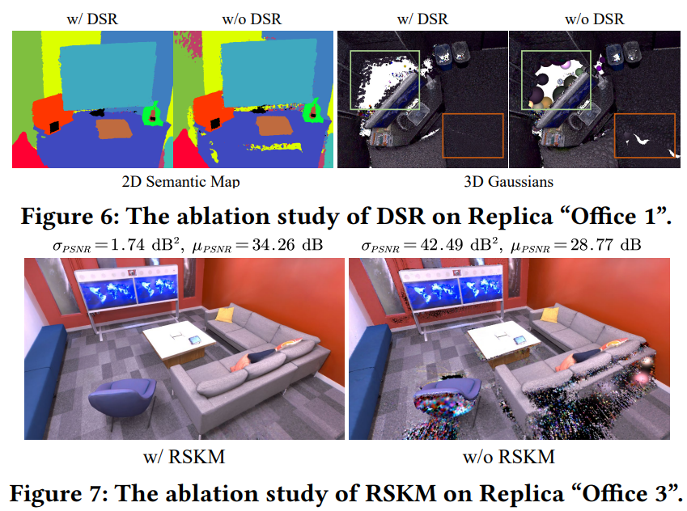
Further Experiments
Optimization bias on Replica
Our proposed RSKM strategy not only improves rendering quality (higher mean PSNR $\mu_{PSNR}$) but also enhances the global consistency of the map (lower PSNR variance $\sigma_{PSNR}$). The LCKM strategy employed in SplaTAM \cite{keetha2024splatam} exhibits lower PSNR in regions with high covisibility and frequent optimization iterations, thereby hindering model convergence in these areas. Conversely, in regions with fewer covisible frames, the reduced optimization iterations lead to under-optimized model, resulting in decreased PSNR.
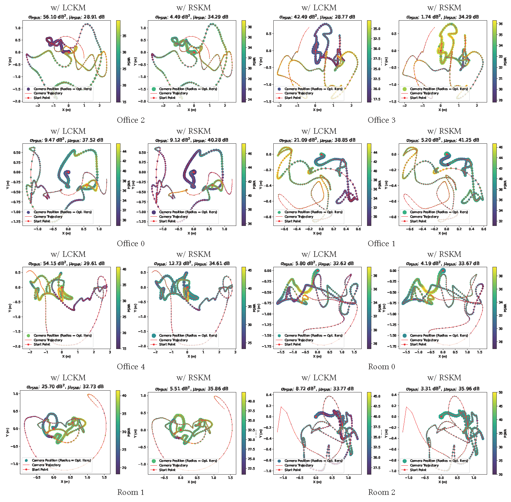
Visualization of the Semantic Gaussian Fields
The visualization of the semantic Gaussian fields constructed by our GS3LAM on the Replica and ScanNet datasets. GS3LAM demonstrates robust tracking capabilities and achieves real-time high-quality rendering at 109 FPS, along with precise 3D semantic reconstruction.

Semantic Gaussian Field Decoupling
GS3LAM is capable of real-time construction of 3D semantic maps that exhibit geometric, appearance, and semantic consistency, thereby enabling potential downstream real-time tasks.
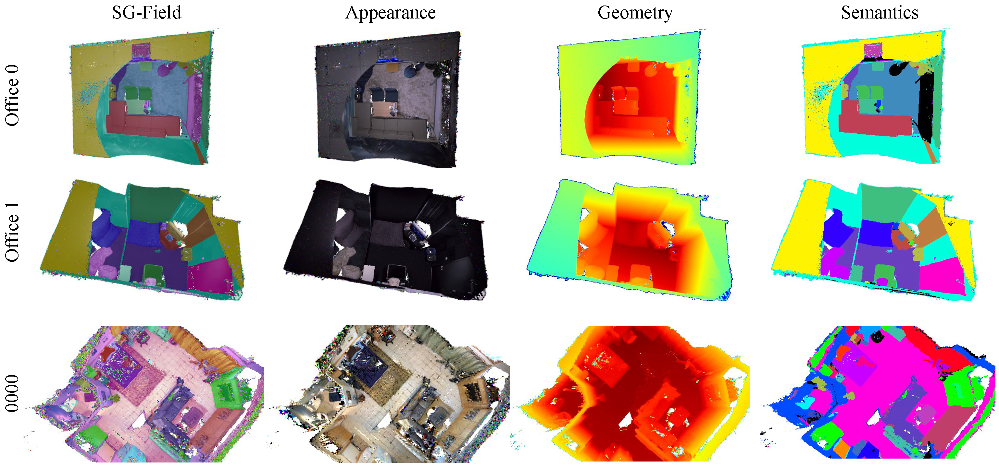
More rendering results on Replica

More rendering results on ScanNet

Semantic rendering on Replica and ScanNet